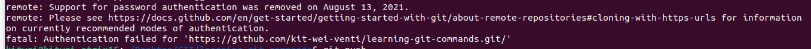

lxc exec u2004 -- sudo -iu ubuntu bash -ilc "terminator&"
rosbag play ~/shared_space/data/20220929/Tg133/PSA8331_2022-09-29-11-50-47_22.bag --clock -s 180 -r 3
put your source into bashrc so dn to source evrytime
container
- can run multiple container on one machine!
- they contain packages of software and can run on any environment
- lightweight, so can run more containers compared to vms. require fewer resources deploy faster
rosrun, ros launch
rospack find
can use it to find package
what is echo for?
It shows the data published on a topic
difference between "sudo apt" and "sudo apt-get"
list -a
show u all the files including the hidden files
wget
used this command to download files from internet (use this with the file url u wanna download)
echo
use to display text, strings or messages
touch
create empty file
cat
create single/multiple file, view it, also gives us output of files in terminal
sudo
very powerful command
what is a package , and what does it contain?
1)it must contain a .xml file
roscore explain
2)it must contain a CMakeLists.txt which uses catkin
click here
difference between catkin_make and catkin_build
catkin build can be used from any directory in the workspace while catkin_make only works in the top level directory.
CMake and CMalelists
CMake is a build system tht uses script called CMakelists to generate build files for specific environment
CMakelist: CMakeLists. txt file contains a set of directives and instructions describing the project's source files and targets (executable, library, or both).
GIT
Link to GIT

What is git?
- keep track of changes to code, synchronise work/code with different colleagues
- test changes to code without losing the original
- revert back to old version of code!
Git Clone:
- take a repository from internet and download it onto your computer (nned the github repo link)
Git Commit:
https://www.youtube.com/watch?v=NcoBAfJ6l2Q&t=1619s
- save the current state of the files and folders inside the repository and take a snapshot, so that later you can refer back to them
- can use git commit -m "write the meesage u want to convey"

- if u wanna combine git commit and git add, eg: wanna git add all the files, u can use git commit -am "message u wanna write here"
Git Add:
- it is use to add a file into a checklist such tht when the next time u wanna save it, git will save all these files you have added. it is kinda like shortlisting the files you wanna save!
GIT status:
- It tells u what is currently happening in ur github repo

- your branch is ahed of origin/main : means that ur version is more updated than the one on github. (origin/main is refering to github)

GIT push:
- take your changes you have made in repo and push it up to github
- need to generate token if not get this error

GIT pull:
- opp of git push. EG: u think the codes on ur github is more outdated than the one on ur local computer, then we use git pull.
- smths might have merge conflict then need choose in ur code what u wanna remove or keep
GIT Log:
- keep track of changes/ commits you have made to your code (can see the message u type, who edited...)

GIT reset:
- accidentally made a change you actually dw, use git reset to go back to previous commit, or can use it to reset everyth.
- can go back to specific commit (jus need the hash can be found by using git log) (git reset --hard commit)
- can also go back to the repo at github (origin/master) (git reset --hard origin/master)
GIT branching
- git branching allow u to work on multiple things simultaneously without disrupting the master, can work on multiple rep at the same time
- if we dont use git branching we cant work on many repo at the same time, so if there is a bug somewhr behind, u cant work on other things
- master branch: default branch
- head branch: whr u are currently working on (can switch from one branch to another branch)
- feature/ other branch
GIT branch
- tell u wat branch u are currently on (the star will tell you) and what branches exist.
GIT checkout
- use git checkout to change the branch u wanna work on
GIT merge
- merge diff branches (EG: u make changes to both brnaches in ur codes now u wanna combine both changes tgt)
GIT rebase
- copy
- Rebasing is the process of combining or moving a sequence of commits on top of a new base commit.